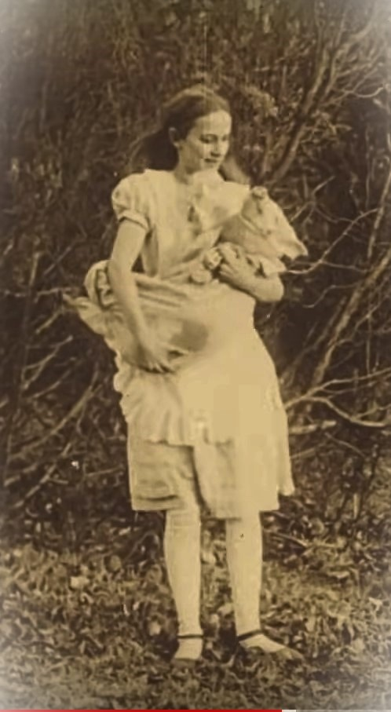

This is a brief chronicle of little-known events in the life of Viola Savoy, an actress of theater plays and films. Today, there are several publications about the life and performances of the actress. However, many of these publications do not provide exact references and only refer to articles that also lack precise references. In this regard, and the reason for writing this work, was the opening of a gap that occurred just this year (2025). A little note on The Billboard announced the death of Frank L. Sowars father of Viola Savoy and former performer. This brief note was the starting point of an investigation that led to request and later consult the birth, death, and marriage records in Boston, MA and New York area. You can read more about it in the full article.
